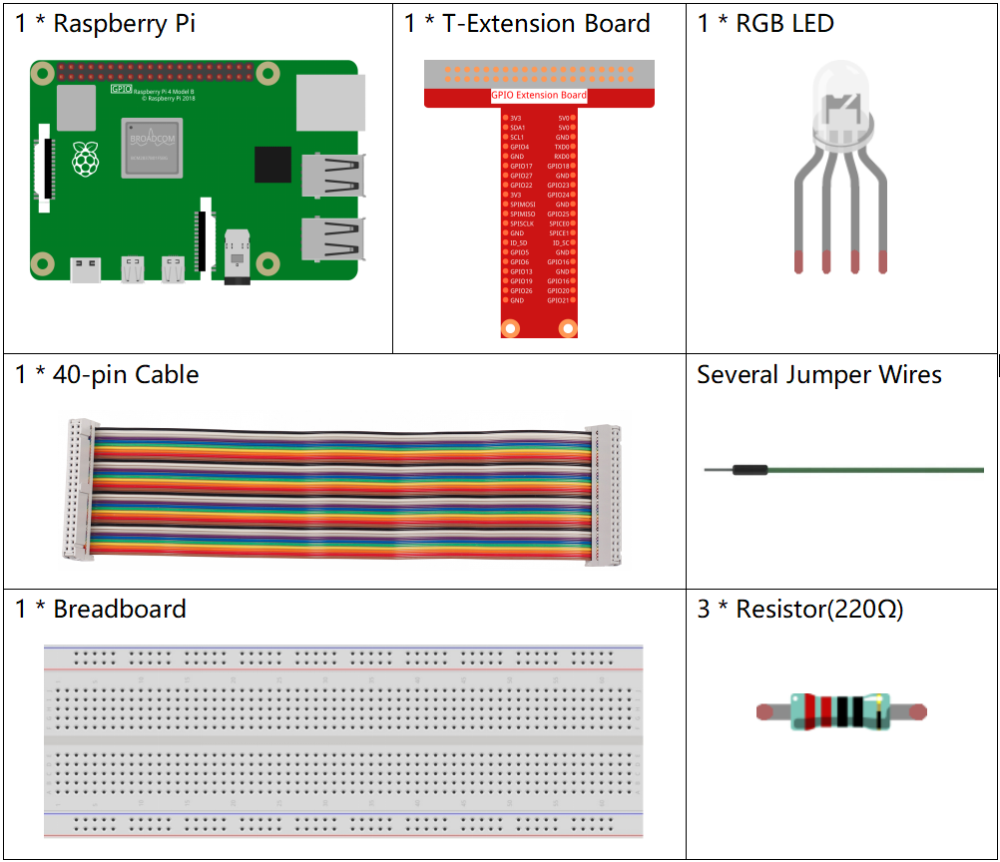
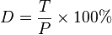
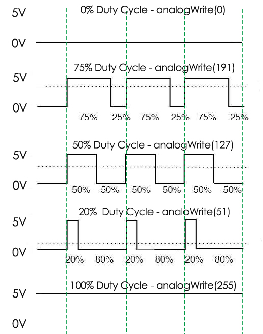

Nota
¡Hola! Bienvenido a la Comunidad de Entusiastas de Raspberry Pi, Arduino y ESP32 de SunFounder en Facebook. Profundiza en Raspberry Pi, Arduino y ESP32 con otros entusiastas.
¿Por qué unirse?
Soporte Experto: Resuelve problemas post-venta y desafíos técnicos con la ayuda de nuestra comunidad y equipo.
Aprender y Compartir: Intercambia consejos y tutoriales para mejorar tus habilidades.
Vistas Exclusivas: Accede anticipadamente a anuncios de nuevos productos y adelantos.
Descuentos Especiales: Disfruta de descuentos exclusivos en nuestros productos más recientes.
Promociones Festivas y Sorteos: Participa en sorteos y promociones navideñas.
👉 ¿Listo para explorar y crear con nosotros? Haz clic en [Aquí] y únete hoy.
1.1.2 LED RGB
Introducción
En esta lección, aprenderemos a controlar un LED RGB para que parpadee en varios colores.
Componentes
Principio
PWM
La Modulación por Ancho de Pulso, o PWM, es una técnica para obtener resultados analógicos mediante medios digitales. El control digital se utiliza para crear una onda cuadrada, una señal que alterna entre encendido y apagado. Este patrón de encendido y apagado puede simular voltajes intermedios entre encendido total (5 Voltios) y apagado (0 Voltios) al variar el tiempo que la señal permanece encendida frente al tiempo que permanece apagada. La duración del «tiempo de encendido» se denomina ancho de pulso. Para obtener valores analógicos variables, se cambia o modula dicho ancho. Si se repite este patrón de encendido y apagado lo suficientemente rápido con algún dispositivo, como un LED, el resultado sería una señal de voltaje constante entre 0 y 5v que controla el brillo del LED.
Ciclo de Trabajo
Un ciclo de trabajo es el porcentaje de un período en el que una señal está activa. Un período es el tiempo que tarda una señal en completar un ciclo de encendido y apagado. Como fórmula, un ciclo de trabajo se puede expresar así:
{kind=link}
Donde D es el ciclo de trabajo, T es el tiempo que la señal está activa, y P es el período total de la señal. Por lo tanto, un ciclo de trabajo del 60% significa que la señal está encendida el 60% del tiempo y apagada el 40% del tiempo. El «tiempo de encendido» para un ciclo de trabajo del 60% podría ser una fracción de segundo, un día o incluso una semana, dependiendo de la duración del período.
{kind=link}
LED RGB

Los tres colores primarios del LED RGB se pueden mezclar para crear varios colores a través de su brillo. El brillo del LED se puede ajustar con PWM. La Raspberry Pi solo tiene un canal para la salida PWM de hardware, pero necesita tres canales para controlar el LED RGB, lo que significa que es difícil controlar el LED RGB con el PWM de hardware de la Raspberry Pi. Afortunadamente, la biblioteca softPwm simula PWM (softPwm) mediante programación. Solo necesitas incluir el archivo de encabezado softPwm.h (para los usuarios de C), y luego llamar a la API que proporciona para controlar fácilmente el LED RGB mediante salida PWM multicanal, de modo que se puedan mostrar todo tipo de colores.
Diagrama Esquemático
Después de conectar los pines R, G y B a una resistencia limitadora de corriente, conéctalos a GPIO17, GPIO18 y GPIO27 respectivamente. El pin más largo (GND) del LED se conecta al GND de la Raspberry Pi. Cuando se le dan diferentes valores de PWM a los tres pines, el LED RGB mostrará diferentes colores.
T-Board Name |
physical |
wiringPi |
BCM |
GPIO17 |
Pin 11 |
0 |
17 |
GPIO18 |
Pin 12 |
1 |
18 |
GPIO27 |
Pin 13 |
2 |
27 |

Procedimientos Experimentales
Paso 1: Construir el circuito.

Paso 2: Ir a la carpeta del código.
cd ~/davinci-kit-for-raspberry-pi/c/1.1.2/
Paso 3: Compilar el código.
gcc 1.1.2_rgbLed.c -lwiringPi
Nota
Cuando se ejecute la instrucción «gcc», si no se llama a «-o», el archivo ejecutable se nombrará «a.out».
Paso 4: Ejecutar el archivo ejecutable.
sudo ./a.out
Después de que se ejecute el código, verás que el RGB muestra rojo, verde, azul, amarillo, púrpura y cian.
Nota
Si no funciona después de ejecutarlo, o si aparece un mensaje de error: "wiringPi.h: No such file or directory», consulta c code is not working?.
Código
#include <wiringPi.h>
#include <softPwm.h>
#include <stdio.h>
#define uchar unsigned char
#define LedPinRed 0
#define LedPinGreen 1
#define LedPinBlue 2
void ledInit(void){
softPwmCreate(LedPinRed, 0, 100);
softPwmCreate(LedPinGreen,0, 100);
softPwmCreate(LedPinBlue, 0, 100);
}
void ledColorSet(uchar r_val, uchar g_val, uchar b_val){
softPwmWrite(LedPinRed, r_val);
softPwmWrite(LedPinGreen, g_val);
softPwmWrite(LedPinBlue, b_val);
}
int main(void){
if(wiringPiSetup() == -1){ //si la inicialización de wiring falla, printf mensaje en pantalla
printf("setup wiringPi failed !");
return 1;
}
ledInit();
while(1){
printf("Red\n");
ledColorSet(0xff,0x00,0x00); //red
delay(500);
printf("Green\n");
ledColorSet(0x00,0xff,0x00); //green
delay(500);
printf("Blue\n");
ledColorSet(0x00,0x00,0xff); //blue
delay(500);
printf("Yellow\n");
ledColorSet(0xff,0xff,0x00); //yellow
delay(500);
printf("Purple\n");
ledColorSet(0xff,0x00,0xff); //purple
delay(500);
printf("Cyan\n");
ledColorSet(0xc0,0xff,0x3e); //cyan
delay(500);
}
return 0;
}
Explicación del Código
#include <softPwm.h>
La biblioteca utilizada para realizar la función pwm del software.
void ledInit(void){
softPwmCreate(LedPinRed, 0, 100);
softPwmCreate(LedPinGreen,0, 100);
softPwmCreate(LedPinBlue, 0, 100);
}
La función utiliza software para crear un pin PWM, estableciendo su período entre 0x100us-100x100us.
El prototipo de la función softPwmCreate(LedPinRed, 0, 100) es el siguiente:
int softPwmCreate(int pin,int initialValue,int pwmRange);
Parámetro pin: Cualquier pin GPIO de Raspberry Pi puede configurarse como un pin PWM.
Parámetro initialValue: El ancho del pulso inicial es ese valor inicial multiplicado por 100us.
Parámetro pwmRange: el período de PWM es ese rango pwm multiplicado por 100us.
void ledColorSet(uchar r_val, uchar g_val, uchar b_val){
softPwmWrite(LedPinRed, r_val);
softPwmWrite(LedPinGreen, g_val);
softPwmWrite(LedPinBlue, b_val);
}
Esta función establece los colores del LED. Usando RGB, el parámetro formal r_val representa la luminiscencia del rojo, g_val del verde, b_val del azul.
El prototipo de la función softPwmWrite(LedPinBlue, b_val) es el siguiente:
void softPwmWrite (int pin, int value) ;
Parámetro pin: Cualquier pin GPIO de Raspberry Pi puede configurarse como un pin PWM.
Parámetro Value: El ancho del pulso de PWM es el valor multiplicado por 100us. Ten en cuenta que el valor solo puede ser menor que el rango pwm definido anteriormente; si es mayor que el rango pwm, se le asignará un valor fijo, el rango pwm.
ledColorSet(0xff,0x00,0x00);
Llama a la función definida anteriormente. Escribe 0xff en LedPinRed y 0x00 en LedPinGreen y LedPinBlue. Solo el LED rojo se encenderá después de ejecutar este código. Si deseas encender LEDs en otros colores, simplemente modifica los parámetros.